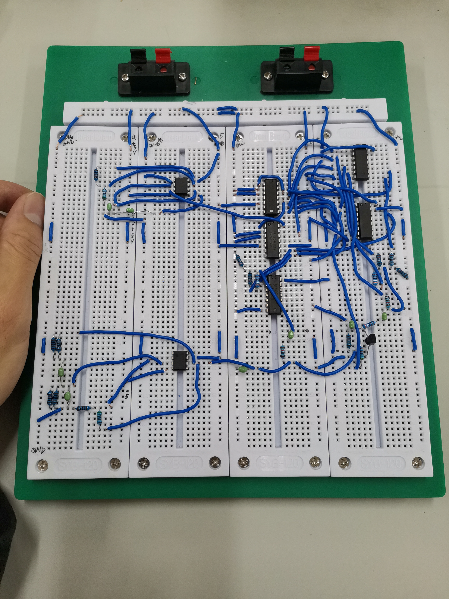

从面包板的制作中得到的一些感悟
大三上半学期有个有趣的实验，要求学生设计电路并制作一个面包板。
刚听到这个实验时，我倒是不怎么在意，感觉应该就是一个普通的硬件实验，应该挺快能完成水过去。
到了实验室上手时才发现，确实还是太天真，很多事情并不是想象中那么容易的。
第一次去做时，没做好充足准备。图没画好，几个元件的作用也没怎么搞懂。当时课程和其他实验也比较多，实验室和教室来回跑，没去成几次实验室，又觉得时间应该够，没和其他同学一起去实验室通宵，结果没能顺利做完，但基本搞懂了面包板的原理，申请到下一次实验。
这一次算是可以心无旁骛地开始做面包板了，通过询问老师，理解了一些之前实验中尚不明白的点（特别是构建电源那一块，很感谢王老师的指导），然后便着手开始连线了。
这次连线一开始是非常顺利的，我先搜集好了大部分要用到的原件，然后根据电路图，一个一个模块地连接好，每连完一个模块，就对该模块进行测试，确认仿真波形无误后便开始连接下一个模块。
花了一个下午和晚上，已经完成3到4个模块的连接了，晚上8:30准时返回宿舍洗洗睡！
第二天睡了懒觉，10点左右到达实验室，开始连线。连接 74LS153 那部分时，电路图较为复杂，连完之后，波形总是不正确，重新连又要话不少时间，所以我一直debug，debug，测试各个部分的电压，反复检查各个位置的连线……
不幸的是，还是没有发现问题所在，这很大一部分要归咎于我连得实在是太乱了，很难debug。中午到点了，肚子罢工了，只能去吃饭了！
下午回宿舍困觉，到了3点多精神饱满，返回实验室。我下定决心，把那个模块的连线都拆了重新开始连！
这次我吸取上次的教训，将该模块所有的连线都尽可能整洁有序地连好了，功夫不负有心人，连完后测试顺利通过了。
到了下午6点左右，所有模块基本连完，想找老师验收，可惜到饭点了，老师不在，我也吃饭去咯。
晚上找老师验收，图像看了，老师说没啥问题了。可惜老师说所有人要统一到明天验收，不能提前走。。真是令人费解的操作，遂返回宿舍摸鱼了。
第二天前往验收，竟然在画图这部分出了点问题，第一次验收没通过，把图改了改，第二次顺利通过验收。如下是我的丑陋的面包板：

实验结束了，要求拆掉板子。拆板子时，真是感慨万千，真正感受到“世上无难事，只怕有心人”这个哲理。
我觉得真要想办成什么事，首先要做完充足的准备，不要轻敌，不能自大。
要认真地去对待每一件事，不要在关键的时候还不知轻重，懒懒散散的。
不懂的地方，经过思考后仍得不出解决方法的，要虚心请教老师或同学。
要敢于去改变，就像当时debug许久无果，要敢于重新开始，不要害怕失败。
最后就是，在接近于成功的边缘时，不要以为自己已经成功了，永远要沉得住气，不到最后一刻不要掉以轻心。
2022-12-11：面包板日。
感谢自己，以及给予我许多帮助的老师。
From my blog: akynazh.
Over.